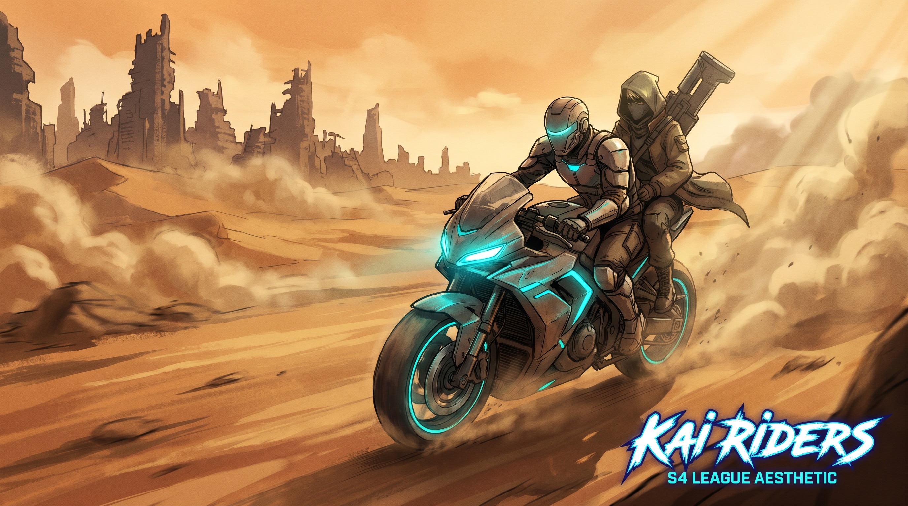
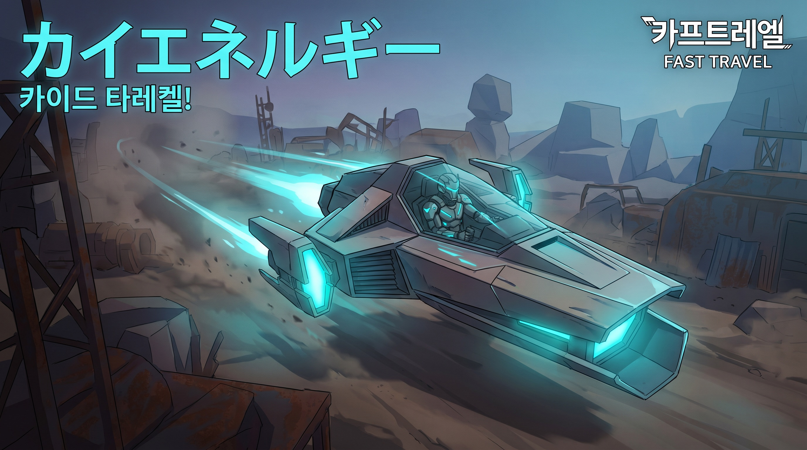
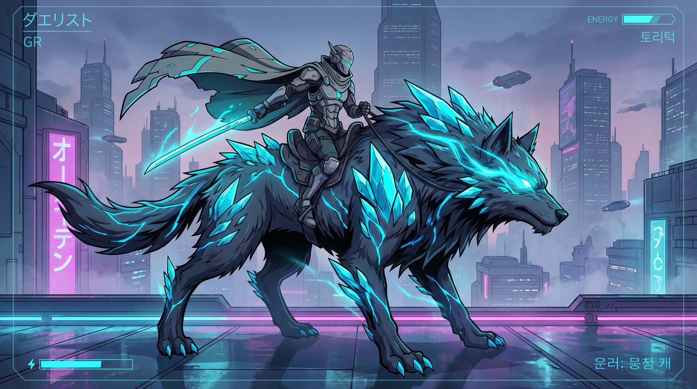

Velocità = stat in stile Metin2 (solo da equip, con cap). Tier 0 = il corpo (salto, wall-jump, dash), unico ammesso in dungeon e arene. Poi sale la scala dei mezzi.
Il movimento a piedi è il cuore del combattimento ed è l'unico permesso dove conta davvero: dungeon e arene. I mezzi sono per il mondo aperto, mai per il fight.
Salto singolo (no double jump) + wall-jump che ti spara via dalle pareti: il wall-jump è l'unica via per guadagnare aria. Lo usi come trampolino, non ci corri sopra.
Scatto direzionale per chiudere o riposizionare — solo in stance spada. Burst breve, momentum, 8 vie (anche in aria). Col gun sei grounded.
Schivata laterale che riposiziona la hitbox — ZERO i-frame. Schivi muovendoti davvero, non con l'invincibilità. Difesa, non offesa.
Corsa sostenuta per coprire terreno tra un ingaggio e l'altro. La velocità base che alimenta wall-jump e dash.
Sei tier sopra il corpo. La gerarchia non è lineare: salire non significa "più veloce" ma "più capace" — accessi, terreni e ruoli diversi.
| T | Mezzo | Dove | Note |
|---|---|---|---|
| 1 | Monopattino / Skate / Bici | Città + Gialle | Primo gusto di velocità, stile urbano. Entry-level. |
| 2 | Moto | Gialle → Nere | Standard della wasteland; il passeggero può sparare. |
| 3 | Macchine / Buggy | Gialle → Nere | Carovane, bagagliaio = cargo extra per il loot. |
| 4 | Navicelle volanti | Rotte fisse | Quota bassa (il KAI disturba l'avionica). La più rapida. |
| 5 | Animali · esoscheletro KAI | Ovunque | Lupo-corriere, cervo-scalatore. Passa dove i mezzi non passano. |
| 6 | Animali · mutazione KAI | Ovunque | Cristalli nel corpo, abilità uniche. Lo status symbol del server. |



Dungeon e arene = corpo. Il combattimento competitivo non si compra.
Per ingaggiare scendi dal mezzo. Niente drive-by che salta lo skill di duello (salvo il passeggero della moto).
Ogni tier apre terreni e usi diversi. Scegli il mezzo per il compito, non per la velocità pura.
Nelle zone aperte i mezzi si possono distruggere. Si riparano a costo basso — ma a piedi sei vulnerabile.